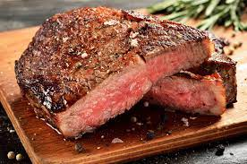

Sous Vide Steak

Sous what?
Sous Vide is cooking with water. No, not boiling. Well, boiling a bag. When we say sous vide, we mean
we will be sealing our steaks in a waterproof bag and cooking them. The benefit of sous vide is that the steaks will
be the exact tempature you want them at. There is no guessing rare or well done
anymore. Let's get boiling.
Ingredients
- 4 Traditional Thickness Ribeye Steaks
- 2 Tblsp of Coarse Salt
- 2 Tblsp of Coarse pepper
Steps
- Mix the salt and peper before rubbing on both sides of the steak.
- Place steaks in the sous vide bags to vaccum seal.
- Set the sous vide water heater to the desired tempature
- Medium Rare: 127° F
- Medium: 132° F
- Medium Well: 149° F
- Well: 160° F
- Place the sealed bag in to the water when the desired tempature is reached for at least 90 minutes.
- When there are 30 minutes left on the sous vide, place a cast iron skillet in the oven and set to broil.
- When the 90 minutes is up, turn a stove top burner to high and place hot skillet on the burner.
- Remove the bag from the sous vide, remove the steaks and place them on the skillet.
- Turn the steaks over after 45 seconds and remove after another 45 seconds.
- Remove the steaks and serve.
Home